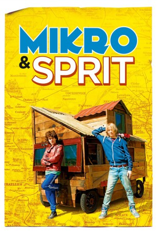

#4513 Mikro & Sprit
 
 IMDB-Wertung: 6.7 / 10
IMDB-Wertung: 6.7 / 10  Metascore: 0
Metascore: 0 
Mitten im laufenden Schuljahr kommt ein Neuer in die Klasse: Théo. Wie Daniel ist auch er schnell ein Außenseiter in der Klasse: Daniel, introvertiert und immer vertieft in seine Zeichnungen und Théo, der auf alles eine Antwort weiß und leidenschaftlich gerne tüftelt. Doch eins haben beide gemeinsam: Als die Sommerferien beginnen will keiner die Zeit mit seiner Familie verbringen und zusammen schmieden sie einen Plan: Mit Hilfe eines Rasenmähermotors und einigen Brettern zimmern sie sich ein ebenso skurriles wie liebevoll gestaltetes und vor allem fahrbares Haus. Ein abenteuerlicher Roadtrip - mit maximal 20 km/h - über die französischen Landstraßen beginnt. Sie lernen neue Freunde kennen, liefern sich eine Verfolgungsjagd mit der Polizei und vor allem...machen das, was sie schon immer tun wollten: Die Freiheit genießen, einen wundervollen Sommer lang!
Jahr: 2015
Dauer: 103 Minuten
FSK: 6
Land: Frankreich Studio: StudioCanalTonspuren:
Untertitel: Deutsch,
Auflösung: 1080p (1808x1080) Größe: 5601 MB
Genre: Abenteuer, Komödie, Drama
Regisseur: Michel Gondry
Drehbuch: David Abramowitz
Soundtrack:
Darsteller:
 Audrey Tautou als Marie-Thérèse
Audrey Tautou als Marie-Thérèse- Ely Penh als Le chef de bande
- Sacha Bourdo als Le prof de russe
- Ange Dargent als Daniel
- Théophile Baquet als Théo
- Diane Besnier als Laura
- Vincent Lamoureux als Steve
- Agathe Peigney als Agathe
- Douglas Brosset als Oscar
- Charles Raymond als Kevin
- Ferdinand Roux-Balme als Simon
- Marc Delarue als Romain
- Laurent Poitrenaux als Le dentiste
 Jana Bittnerova als Madame Leloir
Jana Bittnerova als Madame Leloir- Zimsky als Monsieur Leloir
- Fabio Zenoni als Christian
- Elsa Truscello als L'hôtesse de l'air
- Étienne Charry als L'organisateur
- Amir Abou El Kacem als Le journaliste 1
- Hamza Meziani als Le journaliste 2
- Emeline Bayart als La responsable culturelle
- Masako Tomita als La coiffeuse
- Eriko Takeda als La masseuse
- Hélène Alexandridis als La femme du dentiste
- Nadine Sainsily als La prof de maths
- Matthias Fortune Droulers als Le frère de Théo
- Maureen O'Donoghue als La batteuse punk
- Geoffrey Noël als Le guitariste chanteur punk
- Marie Berto als Carole Raoult
- Jean-Christophe Bretignère als Le principal du collège
- Emmanuel Berthelot als Guy at Party
- Amir El Kacem als
Datei: X:\2015(G-M)\Mikro & Sprit (2015, FSK6, 1808x1080).mkv seit 04.10.2016
Festplatte: HD 2015(A-Z)
 Es gibt insgesamt 129 Filme in der Gruppe '2015(G-M)'
Es gibt insgesamt 129 Filme in der Gruppe '2015(G-M)'